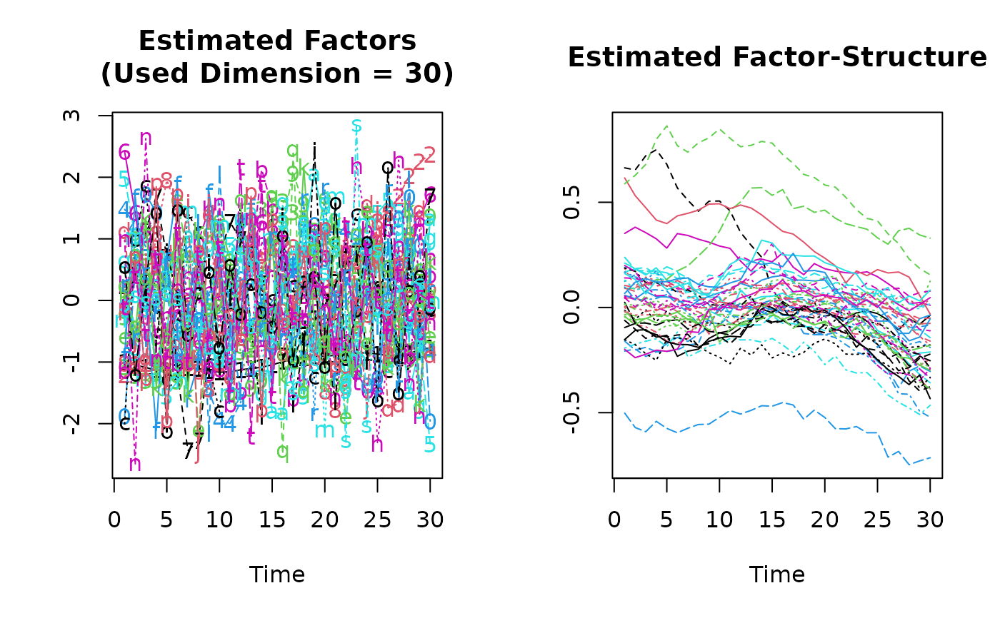

KSS-Routine
KSS.RdEstimation of Panel Data Models with Heterogeneous Time Trends
Arguments
- formula
An object of class 'formula'.
- additive.effects
Type of Data Transformations:
"none": for no transformation"individual": for within transformation"time": for between transformation"twoways": for twoways transformation
- consult.dim.crit
logical.
If
consult.dim.critisFALSE(default) andfactor.dimisNULL: Only the dimensionality criterion of Kneip, Sickles & Song 2012 is used.If
consult.dim.critisTRUEandfactor.dimisNULL: All implemented dimensionality criteria as implemented in the functionOptDim()are computed and the user has to select one proposed dimension via a GUI.
- d.max
A maximal dimension needed for some dimensionality-criteria that are implemented in the function
OptDim(). The default (d.max=NULL) yields to an internal selection ofd.max.- sig2.hat
Standard deviation of the error-term. The default (
sig2.hat=NULL) yields to an internal estimation ofsig2.hat.- factor.dim
Dimension of Factor-Structure. The default (
factor.dim=NULL) yields to an internal estimation offactor.dim.- level
Significance-level for Dimensionality-Criterion of Kneip, Sickles & Song 2012.
- spar
Smoothing parameter for spline smoothing of the residuals. If (
spar=NULL) (default) andCV=FALSEsparis determined via generalized cross validation (GCV).- CV
logical. Selects the procedure for the determination of the smoothing parameter
spar.If
CV=FALSE(default) andspar=NULL: The smoothing parametersparis determined by GCV.If
CV=TRUEandspar=NULL: The smoothing parametersparis determined by Leave-one-out cross validation (CV).
- convergence
Convergence criterion for the CV-optimization of the smoothing parameter
spar. Default isconvergence=1e-6.- restrict.mode
Type of Restriction on the Factor-Structure:
"restrict.factors": Factors are restricted to have an euclidean norm of 1."restrict.loadings": Factor-Loadings are restricted to have an euclidean norm of 1.
- ...
Additional arguments to be passed to the low level functions.
Details
'KSS' is a function to estimate panel data models with unobserved heterogeneous time trends v_i(t). The considered model in Kneip, Sickles & Song (2012) is given by \($Y_{it}=\theta_{t}+\sum_{j=1}^P\beta_{j} X_{itj}+v_i(t)+\epsilon_{it}\quad i=1,\dots,n; t=1,\dots,T.$\) Where the individual time trends, v_i(t), are assumed to come from a finite dimensional factor model \($v_i(t)=\sum_{l=1}^d\lambda_{il}f_l(t),\quad\lambda_{il}\in R,\quad f_l\in L^2[0,T].$\) The unobserved functions v_i(t) can be interpreted as smooth functions of a continuous argument t, as well as stochastic processes for discrete argument t.
formulaUsual 'formula'-object. If you wish to estimate a model without an intercept use '-1' in the formula-specification. Each Variable has to be given as a TxN-matrix. Missing values are not allowed.additive.effects"none": The data is not transformed, except for an eventually subtraction of the overall mean; if the model is estimated with an intercept. The assumed model can be written as \($Y_{it}=\mu+\sum_{j=1}^P\beta_{j} X_{itj}+v_i(t)+\epsilon_{it}\quad i=1,\dots,n; t=1,\dots,T.$\) The parameter 'mu' is set to zero if '-1' is used informula."individual": This is the "within"-model, which assumes that there are time-constant individual effects, tau_i, besides the individual time trends v_i(t). The model can be written as \($Y_{it}=\mu+\sum_{j=1}^P\beta_{j} X_{itj}+v_i(t)+\alpha_{i}+\epsilon_{it}\quad i=1,\dots,n; t=1,\dots,T.$\) The parameter 'mu' is set to zero if '-1' is used informula."time": This is the "between"-model, which assumes that there is a common (for all individuals) time trend, beta_0(t). The model can be written as \($Y_{it}=\mu+\theta_{t}+\sum_{j=1}^P\beta_{j} X_{itj}+v_i(t)+\epsilon_{it}\quad i=1,\dots,n; t=1,\dots,T.$\) The parameter 'mu' is set to zero if '-1' is used informula."twoways": This is the "twoways"-model ("within" & "between"), which assumes that there are time-constant individual effects, tau_i, and a common time trend, beta_0(t). The model can be written as \($Y_{it}=\mu+\theta_{t}+\sum_{j=1}^P\beta_{j} X_{itj}+\alpha_i+v_i(t)+\epsilon_{it}\quad i=1,\dots,n; t=1,\dots,T.$\) The parameter 'mu' is set to zero if '-1' is used informula.
Value
'KSS' returns an object of 'class' '"KSS"'. An object of class '"KSS"' is a list containing at least the following components:
dat.matrix: Whole data set stored within a (N*T)x(p+1)-Matrix, where P is the number of independent variables without the intercept.dat.dim: Vector of length 3: c(T,N,p)slope.para: Beta-parametersbeta.V: Covariance matrix of the beta-parameters.names: Names of the dependent and independent variables.is.intercept: Used an intercept in the formula?: TRUE or FALSEadditive.effects: Additive effect type. One of: "none","individual","time", "twoways".Intercept: Intercept-parameterAdd.Ind.Eff: Estimated values of additive individual effects.Add.Tim.Eff: Estimated values of additive time effects.unob.factors: Txd-matrix of estimated unobserved common factors, where 'd' is the number of used factors.ind.loadings: Nxd-matrix of loadings parameters.unob.fact.stru: TxN-matrix of the estimated factor structure. Each column represents an estimated individual unobserved time trend.used.dim: Used dimensionality of the factor structure.optimal.dim: List of proposed dimensionalities.fitted.values: Fitted values.orig.Y: Original values of the dependent variable.residuals: Residualssig2.hat: Estimated variance of the error term.degrees.of.freedom: Degrees of freedom of the residuals.call
References
Kneip, A., Sickles, R. C., Song, W., 2012 “A New Panel Data Treatment for Heterogeneity in Time Trends”, Econometric Theory
Examples
## See the example in 'help(Cigar)' in order to take a look at the
## data set Cigar
##########
## DATA ##
##########
data(Cigar)
## Panel-Dimensions:
N <- 46
T <- 30
## Dependent variable:
## Cigarette-Sales per Capita
l.Consumption <- log(matrix(Cigar$sales, T,N))
## Independent variables:
## Consumer Price Index
cpi <- matrix(Cigar$cpi, T,N)
## Real Price per Pack of Cigarettes
l.Price <- log(matrix(Cigar$price, T,N)/cpi)
## Real Disposable Income per Capita
l.Income <- log(matrix(Cigar$ndi, T,N)/cpi)
## Estimation:
KSS.fit <- KSS(l.Consumption~l.Price+l.Income, CV=TRUE)
#> Progress: CV-Optimization is running.
#> .........
#> CV-Optimization converged.
(KSS.fit.sum <- summary(KSS.fit))
#> Call:
#> KSS.default(formula = l.Consumption ~ l.Price + l.Income, CV = TRUE)
#>
#> Residuals:
#> Min 1Q Median 3Q Max
#> -0.11 -0.01 0.00 0.01 0.13
#>
#>
#> Slope-Coefficients:
#> Estimate StdErr z.value Pr(>z)
#> (Intercept) 4.0300 0.1720 23.40 < 2.2e-16 ***
#> l.Price -0.2590 0.0216 -12.00 < 2.2e-16 ***
#> l.Income 0.1610 0.0372 4.32 1.54e-05 ***
#> ---
#> Signif. codes: 0 ‘***’ 0.001 ‘**’ 0.01 ‘*’ 0.05 ‘.’ 0.1 ‘ ’ 1
#>
#> Additive Effects Type: none
#>
#> Used Dimension of the Unobserved Factors: 6
#>
#> Residual standard error: 0.00074 on 921 degrees of freedom
#> R-squared: 0.99
plot(KSS.fit.sum)
